건축기사 (2018-04-28 기출문제)
1과목: 건축계획
1. 사방에서 감상해야 할 필요가 있는 조각물이나 모형을 전시하기 위해 벽면에서 띄어놓아 전시하는 특수전시기법은?
- 아일랜드 전시
- 디오라마 전시
- 파노라마 전시
- 하모니카 전시
(정답률: 85%)

2. 은행건축계획에 관한 설명으로 옳지 않은 것은?
- 은행원과 고객의 출입구는 별도로 설치하는 것이 좋다.
- 영업실의 면적은 은행원이 1인당 1.2m2을 기준으로 한다.
- 대규모의 은행일 경우 고객의 출입구는 되도록 1개소로 하는 것이 좋다.
- 주출입구에 이중문을 설치할 경우, 바깥문은 바깥여닫이 또는 자재문으로 할 수 있다.
(정답률: 77%)
3. 극장 무대 주위의 벽에 6~9m 높이로 설치되는 좁은 통로로, 그리드 아이언에 올라가는 계단과 연결되는 것은?
- 그린룸
- 록 레일
- 플라이 갤러리
- 슬라이딩 스테이지
(정답률: 84%)
4. 병원건축의 형식 중 분관식에 관한 설명으로 옳지 않은 것은?
- 동선이 길어진다.
- 채광 및 통풍이 좋다.
- 대지면적에 제약이 있는 경우에 주로 적용 된다.
- 환자는 주로 경사로를 이용한 보행 또는 들 것으로 운반된다.
(정답률: 87%)
5. 다음 중 도서관에서 장서가 60만권일 경우 능률적인 작업용량으로서 가장 적정한 서고의 면적은?
- 3000m2
- 4500m2
- 5000m2
- 6000m2
(정답률: 84%)
6. 다음 중 백화점의 기둥간격 결정요소와 가장 거리가 먼 것은?
- 화장실의 크기
- 에스컬레이터의 배치방법
- 매장 진열장의 치수와 배치방법
- 지하주차장의 주차방식과 주차폭
(정답률: 81%)
7. 건축계획에서 말하는 미의 특성 중 변화 혹은 다양성을 얻는 방식과 가장 거리가 먼 것은?
- 억양(Accent)
- 대비(Contrast)
- 균제(Proportion)
- 대칭(Symmetry)
(정답률: 75%)
8. 주택단지 안의 건축물에 설치하는 계단의 유효 폭은 최소 얼마 이상으로 하여야 하는가?
- 0.9m
- 1.2m
- 1.5m
- 1.8m
(정답률: 83%)
9. 사무소 건축의 코어 형식에 관한 설명으로 옳은 것은?
- 편심코어형은 각 층의 바닥면적이 큰 경우 적합하다.
- 양단코어형은 코어가 분산되어 있어 피난상 불리하다.
- 중심코어형은 구조적으로 바람직한 형식으로 유효율이 높은 계획이 가능하다.
- 외코어형은 설비 덕트나 배관을 코어로부터 사무실 공간으로 연결하는데 제약이 없다.
(정답률: 84%)
10. 학교 건축계획에서 그림과 같은 평면 유형을 갖는 학교운영방식은?
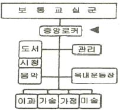
- 달톤형
- 플래툰형
- 교과교실형
- 종합교실형
(정답률: 63%)
11. 공장건축의 지붕형에 관한 설명으로 옳지 않은 것은?
- 솟을지붕은 채광, 환기에 적합한 방법이다.
- 샤렌지붕은 기둥이 많이 소요되는 단점이 있다.
- 뾰족지붕은 직사광선을 어느 정도 허용하는 결점이 있다.
- 톱날지붕은 북향의 채광창으로 일정한 조도를 유지할 수 있다.
(정답률: 80%)
12. 다음 중 학교건축계획에 요구되는 융통성과 가장 거리가 먼 것은?
- 지역사회의 이용에 의한 융통성
- 학교운영방식의 변화에 대응하는 융통성
- 광범위한 교과내용의 변화에 대응하는 융통성
- 한계 이상의 학생수의 증가에 대응하는 융통성
(정답률: 69%)
13. 극장의 평면형식 중 애리나(arena)형에 관한 설명으로 옳지 않은 것은?
- 무대의 배경을 만들지 않으므로 경제성이 있다.
- 무대의 장치나 소품은 주로 낮은 기구들로 구성한다.
- 가까운 거리에서 관람하면서 많은 관객을 수용할 수 있다.
- 연기자가 일정한 방향으로만 관객을 대하므로 강연, 콘서트, 독주, 연극 공연에 가장 좋은 형식이다.
(정답률: 87%)
14. 사무소 건축의 실단위 계획에 있어서 개방식 배치(Open Plan)에 관한 설명으로 옳지 않은 것은?
- 독립성과 쾌적감 확보에 유리하다.
- 공사비가 개실시스템보다 저렴하다.
- 방의 길이나 깊이에 변화를 줄 수 있다.
- 전면적을 유효하게 이용할 수 있어 공간 절약상 유리하다.
(정답률: 83%)
15. 주택 부엌에서 작업삼각형(work triangle)의 구성 요소에 속하지 않는 것은?
- 개수대
- 배선대
- 가열대
- 냉장고
(정답률: 82%)
16. 다음 중 건축가와 그의 작품의 연결이 옳지 않은 것은?
- Marcel Breuer - 파리 유네스코본부
- Le Corbusier - 동경 국립서양미술관
- Antonio Gaudi - 시드니 오페라하우스
- Frank Lloyd Wright - 뉴욕 구겐하임 미술관
(정답률: 67%)
17. 다음의 한국 근대건축 중 르네상스 양식을 취하고 있는 것은?
- 명동성당
- 한국은행
- 덕수궁 정관헌
- 서울 성공회성당
(정답률: 74%)
18. 다포식(多包式) 건축양식에 관한 설명으로 옳지 않은 것은?(오류 신고가 접수된 문제입니다. 반드시 정답과 해설을 확인하시기 바랍니다.)
- 기둥 상부에만 공포를 배열한 건축양식이다.
- 주로 궁궐이나 사찰 등의 주요 정전에 사용 되었다.
- 주심포형식에 비해서 지붕하중을 등분포로 전달할 수 있는 합리적 구조법이다.
- 간포를 받치기 위해 창방 외에 평방이라는 부재가 추가되었으며 주로 팔작지붕이 많다.
(정답률: 71%)
19. 아파트의 평면형식에 관한 설명으로 옳지 않은 것은?
- 집중형은 기후조건에 따라 기계적 환경조절이 필요하다.
- 편복도형은 공용복도에 있어서 프라이버시가 침해되기 쉽다.
- 홀형은 승강기를 설치할 경우 1대당 이용률이 복도형에 비해 적다.
- 편복도형은 단위면적당 가장 많은 주호를 집결시킬 수 있는 형식이다.
(정답률: 72%)
20. 근린생활권에 관한 설명으로 옳지 않은 것은?
- 인보구는 가장 작은 생활권 단위이다.
- 인보구 내에는 어린이놀이터 등이 포함된다.
- 근린주구는 초등학교를 중심으로 한 단위이다.
- 근린분구는 주간선도로 또는 국지도로에 의해 구분된다.
(정답률: 71%)
2과목: 건축시공
21. 지반조사 중 보링에 관한 설명으로 옳지 않은 것은?
- 보링의 깊이는 일반적인 건물의 경우 대략 지지 지층 이상으로 한다.
- 채취시료는 충분히 햇빛에 건조시키는 것이 좋다.
- 부지 내에서 3개소 이상 행하는 것이 바람직하다.
- 보링 구멍은 수직으로 파는 것이 중요하다.
(정답률: 81%)
22. 콘크리트 블록벽체 2m2를 쌓는데 소요되는 콘크리트 블록 장수로 옳은 것은? (단, 블록은 기본형이며, 할증은 고려하지 않음)
- 26장
- 30장
- 34장
- 38장
(정답률: 57%)
23. 콘크리트용 재료 중 시멘트에 관한 설명으로 옳지 않은 것은?
- 중용열포틀랜드시멘트는 수화작용에 따르는 발열이 적기 때문에 매스콘크리트에 적당하다.
- 조강포틀랜드시멘트는 조기강도가 크기 때문에 한중콘크리트공사에 주로 쓰인다.
- 알칼리 골재반응을 억제하기 위한 방법으로써 내황산염포틀랜드시멘트를 사용한다.
- 조강포틀랜드시멘트를 사용한 콘크리트의 7일 강도는 보통포틀랜드시멘트를 사용한 콘크리트의 28일 강도와 거의 비슷하다.
(정답률: 69%)
24. 도장공사에서의 뿜칠에 관한 설명으로 옳지 않은 것은?
- 큰 면적을 균등하게 도장할 수 있다.
- 스프레이건과 뿜칠면 사이의 거리는 30cm를 표준으로 한다.
- 뿜칠은 도막두께를 일정하게 유지하기 위해 겹치지 않게 순차적으로 이행한다.
- 뿜칠 공기압은 2~4kg/cm2를 표준으로 한다.
(정답률: 71%)
25. 타일공사에서 시공 후 타일접착력 시험에 관한 설명으로 옳지 않은 것은?
- 타일의 접착력 시험은 600m2 당 한 장씩 시험한다.
- 시험할 타일은 먼저 줄눈 부분을 콘크리트면까지 절단하여 주위의 타일과 분리시킨다.
- 시험은 타일 시공 후 4주 이상일 때 행한다.
- 시험결과의 판정은 타일 인장 부착강도가 10MPa이상이어야 한다.
(정답률: 68%)
26. 다음 중 무기질 단열재료가 아닌 것은?
- 셀룰로오스 섬유판
- 세라믹 섬유
- 펄라이트 판
- ALC 패널
(정답률: 61%)
27. CM(Construction Management)의 주요업무가 아닌 것은?
- 설계부터 공사관리까지 전반적인 지도, 조언, 관리업무
- 입찰 및 계약 관리업무와 원가관리업무
- 현장 조직관리업무와 공정관리업무
- 자재조달업무와 시공도 작업업무
(정답률: 70%)
28. 용접작업 시 용착금속 단면에 생기는 작은 은색의 점을 무엇이라 하는가?
- 피시 아이(fish eye)
- 블로 홀(blow hole)
- 슬래그 함입(slag inclusion)
- 크레이터(crater)
(정답률: 84%)
29. 한중(寒中) 콘크리트의 양생에 관한 설명으로 옳지 않은 것은?
- 보온 양생 또는 급열 양생을 끝마친 후에는 콘크리트의 온도를 급격히 저하시켜 양생을 마무리 하여야 한다.
- 초기양생에서 소요 압축강도가 얻어질 때까지 콘크리트의 온도를 5℃ 이상으로 유지하여야 한다.
- 초기양생에서 구조물의 모서리나 가장자리의 부분은 보온하기 어려운 초기양생에 주의하여야 한다.
- 한중 콘크리트의 보온 양생 방법은 급열 양생, 단열 양생, 피복양생 및 이들을 복합한방법 중 한 가지 방법을 선택하여야 한다.
(정답률: 76%)
30. 실링공사의 재료에 관한 설명으로 옳지 않은 것은?
- 가스켓은 콘크리트의 균열부위를 충전하기 위하여 사용하는 부정형 재료이다.
- 프라이머는 접착면과 실링재와의 접착성을 좋게 하기 위하여 도포하는 바탕처리 재료이다.
- 백업재는 소정의 줄눈깊이를 확보하기 위하여 줄눈 속을 채우는 재료이다.
- 마스킹테이프는 시공중에 실링재 충전개소 이외의 오염방지와 줄눈선을 깨끗이 마무리하기 위한 보호 테이프이다.
(정답률: 69%)
31. 도막방수 시공 시 유의사항으로 옳지 않은 것은?
- 도막방수재는 혼합에 따라 재료 물성이 크게 달라지므로 반드시 혼합비를 준수한다.
- 용제형의 프라이머를 사용할 경우에는 화기에 주의하고, 특히 실내 작업의 경우 환기장치를 사용하여 인화나 유기용제 중독을 미연에 예방하여야 한다.
- 코너부위, 드레인 주변은 보강이 필요하다.
- 도막방수 공사는 바탕면 시공과 관통공사가 종결되지 않더라도 할 수 있다.
(정답률: 79%)
32. 지반조사시험에서 서로 관련 있는 항목끼리 옳게 연결된 것은?
- 지내력 - 정량분석시험
- 연한점토 - 표준관입시험
- 진흙의 점착력 - 베인시험(vane test)
- 염분 - 신월샘플링(thin wall sampling)
(정답률: 73%)
33. 공사 착공시점의 인허가항목이 아닌 것은?
- 비산먼지 발생사업 신고
- 오수처리시설 설치신고
- 특정공사 사전신고
- 가설건축물 축조신고
(정답률: 62%)
34. 콘크리트 공사 중 적산온도와 가장 관계 깊은 것은?
- 매스(mass)콘크리트 공사
- 수밀(水密)콘크리트 공사
- 한중(寒中)콘크리트 공사
- AE콘크리트 공사
(정답률: 73%)
35. 조적벽 40m2를 쌓는데 필요한 벽돌량은? (단, 표준형벽돌 0.5B 쌓기, 할증은 고려하지 않음)
- 2850장
- 3000장
- 3150장
- 3500장
(정답률: 68%)
36. 고력볼트 접합에 관한 설명으로 옳지 않은 것은?
- 현대건축물의 고층화, 대형화 추세에 따라 소음이 심한 리벳은 현재 거의 사용하지 않고 볼트접합과 용접접합이 대부분을 차지하고 있다.
- 토크쉐어형 고력볼트는 조여서 소정의 축력이 얻어지면 자동적으로 핀테일이 파단되는 구조로 되어 있다.
- 고력볼트의 조임기구는 토크렌치와 임팩트렌치 등이 있다.
- 고력볼트의 접합형태는 모두 마찰접합이며, 마찰접합은 하중이나 응력을 볼트가 직접 부담하는 방식이다.
(정답률: 75%)
37. 기본공정표와 상세공정표에 표시된 대로 공사를 진행시키기 위해 재료, 노력, 원척도 등이 필요한 기일까지 반입, 동원될 수 있도록 작성한 공정표는?
- 횡선식 공정표
- 열기식 공정표
- 사선 그래프식 공정표
- 일순식 공정표
(정답률: 62%)
38. 유리섬유, 합성섬유 등의 망상포를 적층하여 도포하는 도막방수 공법은?
- 시멘트액체방수공법
- 라이닝공법
- 스터코마감공법
- 루핑공법
(정답률: 63%)
39. 강제말뚝의 부식에 대한 대책과 가장 거리가 먼 것은?
- 부식을 고려하여 두께를 두껍게 한다.
- 에폭시 등의 도막을 설치한다.
- 부마찰력에 대한 대책을 수립한다.
- 콘크리트로 피복한다.
(정답률: 51%)
40. 콘크리트 중 공기량의 변화에 관한 설명으로 옳은 것은?
- AE제의 혼입량이 증가하면 연행공기량도 증가한다.
- 시멘트 분말도 및 단위시멘트량이 증가하면 공기량은 증가한다.
- 잔골재 중의 0.15 ~ 0.3mm의 골재가 많으면 공기량은 감소한다.
- 슬럼프가 커지면 공기량은 감소한다.
(정답률: 52%)
3과목: 건축구조
41. 강구조 용접에서 용접결함에 속하지 않는 것은?
- 오버랩(overlap)
- 크랙(crack)
- 가우징(gouging)
- 언더컷(under cut)
(정답률: 69%)
42. 그림과 같은 구조물의 부정정 차수는?(오류 신고가 접수된 문제입니다. 반드시 정답과 해설을 확인하시기 바랍니다.)
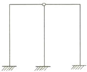
- 1차 부정정
- 2차 부정정
- 3차 부정정
- 4차 부정정
(정답률: 66%)
43. 동일단면, 동일재료를 사용한 캔틸레버 보 끝단에 집중하중이 작용하였다. P1이 작용한 부재의 최대처짐량이, P2가 작용한 부재의 최대처짐량의 2배일 경우 P1: P2는?(오류 신고가 접수된 문제입니다. 반드시 정답과 해설을 확인하시기 바랍니다.)
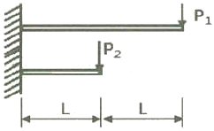
- 1 : 4
- 1 : 8
- 4 : 1
- 8 : 1
(정답률: 38%)
44. 그림과 같은 단순보의 일부 구간으로부터 떼어낸 자유물체도에서 각 좌우측면(가, 나면)에 작용하는 전단력의 방향과 그 값으로 옳은 것은?
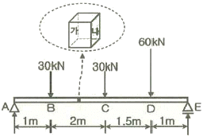
- 가 : 19.1kN(↑), 나 : 19.1kN(↓)
- 가 : 19.1kN(↓), 나 : 19.1kN(↑)
- 가 : 16.1kN(↑), 나 : 16.1kN(↓)
- 가 : 16.1kN(↓), 나 : 16.1kN(↑)
(정답률: 57%)
45. 그림과 같이 수평하중을 받는 라멘에서 휨모멘트의 값이 가장 큰 위치는?
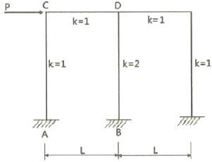
- A
- B
- C
- D
(정답률: 48%)
46. 그림과 같은 단순보에서 A점 및 B점에서의 반력을 각각 RA, RB라 할 때 반력의 크기로 옳은 것은?
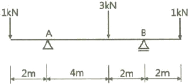
- RA=3kN, RB=2kN
- RA=2kN, RB=3kN
- RA=2.5kN, RB=2.5kN
- RA=4kN, RB=1kN
(정답률: 63%)
47. 필릿용접의 최소사이즈에 관한 설명으로 옳지 않은 것은? (단, KBC2016기준)
- 접합부 얇은 쪽 모재두께가 6mm 이하일 경우 3mm이다.
- 접합부 얇은 쪽 모재두께가 6mm를 초과하고 13mm 이하일 경우 4mm이다.
- 접합부 얇은 쪽 모재두께가 13mm를 초과하고 19mm 이하일 경우 6mm이다.
- 접합부 얇은 쪽 모재두께가 19mm 초과할 경우 8mm이다.
(정답률: 62%)
48. 다음 각 구조시스템에 관한 정의로 옳지 않은 것은?
- 모멘트골조방식 : 수직하중과 횡력을 보와기둥으로 구성된 라멘골조가 저항하는 구조방식
- 연성모멘트골조방식 : 횡력에 대한 저항능력을 증가시키기 위하여 부재와 접합부의 연성을 증가시킨 모멘트골조방식
- 이중골조방식 : 횡력의 25% 이상을 부담하는 전단벽이 연성모멘트골조와 조합되어있는 구조방식
- 건물골조방식 : 수직하중은 입체골조가 저항하고 지진하중은 전단벽이나 가새골조가 저항하는 구조방식
(정답률: 68%)
49. 그림에서 같은 H형강 H-300×150×6.5×9의 x-x축에 대한 단면계수 값으로 옳은 것은? (단, Ix=5080000mm4이다.)
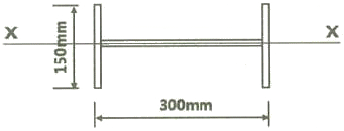
- 58539㎣
- 6⑤68㎣
- 67733㎣
- 71384㎣
(정답률: 49%)
50. 다음 부정정 구조물에서 B점의 반력을 구하면?
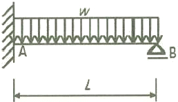
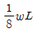
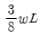
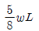
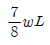
(정답률: 47%)
51. 인장을 받는 이형철근의 직경이 D16(직경 15.9mm)이고, 콘크리트 강도가 30MPa인 표준갈고리의 기본정착길이는?(단, Fy=400MPa , B=1.0 Mc=2300kg/m3)
- 238mm
- 258mm
- 279mm
- 312mm
(정답률: 52%)
52. 양단 힌지인 길이 6m의 H-300×300×10×15의 기둥이 부재중앙에서 약축방향으로 가새를 통해 지지되어 있을 때 설계용 세장비는? (단, rx=131mm, ry=75.1mm)
- 39.9
- 45.8
- 58.2
- 66.3
(정답률: 55%)
53. 그림과 같은 이동하중이 스팬 10m의 단순보위를 지날 때 절대 최대 휨모멘트를 구하면?
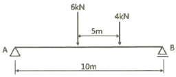
- 16kNㆍm
- 18kNㆍm
- 25kNㆍm
- 30kNㆍm
(정답률: 32%)
54. 그림과 같은 구조물에서 B단에 발생하는 휨모멘트 값으로 옳은 것은?
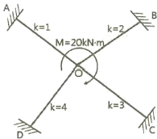
- 2kNㆍm
- 3kNㆍm
- 4kNㆍm
- 6kNㆍm
(정답률: 67%)
55. 등분포하중을 받는 두 스팬 연속보인 B1RC보부재에서 Ⓐ, Ⓑ, Ⓒ 지점의 보 배근에 관한 설명으로 옳지 않은 것은?
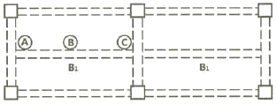
- Ⓐ단면에서는 하부근이 주근이다.
- Ⓑ단면에서는 하부근이 주근이다.
- Ⓐ단면에서의 스터럽 배치간격은 Ⓑ단면에서의 경우보다 촘촘하다.
- Ⓒ단면에서는 하부근이 주근이다.
(정답률: 47%)
56. 그림과 같은 독립기초에 N=480kN, M=96kNㆍm가 작용할 때 기초저면에 발생하는 최대 지반반력은?
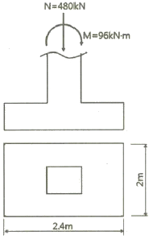
- 15kN/m2
- 150kN/m2
- 20kN/m2
- 200kN/m2
(정답률: 59%)
57. 철골보의 처짐을 적게 하는 방법으로 가장 적절한 것은?
- 보의 길이를 길게 한다.
- 웨브의 단면적을 작게 한다.
- 상부플랜지의 두께를 줄인다.
- 단면2차모멘트 값을 크게 한다.
(정답률: 68%)
58. 강도설계법에서 직접설계법을 이용한 콘크리트 슬래브 설계 시 적용조건으로 옳지 않은 것은?
- 각 방향으로 3경간 이상 연속되어야 한다.
- 슬래브 판들은 단변경간에 대한 장변경간의 비가 2이하인 직사각형이어야 한다.
- 각 방향으로 연속한 받침부 중심간 경간 차이는 긴 경간의 1/3이하이어야 한다.
- 모든 하중은 슬래브판의 특정지점에 작용하는 집중하중이어야 하며 활하중은 고정하중의 3배 이하이어야 한다.
(정답률: 55%)
59. 연약지반에 기초구조를 적용할 때 부동침하를 감소시키기 위한 상부구조의 대책으로 옳지 않은 것은?
- 폭이 일정할 경우 건물의 길이를 길게 할 것
- 건물을 경량화 할 것
- 강성을 크게 할 것
- 부분 증축을 가급적 피할 것
(정답률: 70%)
60. 등가정적해석법에 따른 지진응답계수의 산정식과 가장 거리가 먼 것은?
- 가스트영향계수
- 반응수정계수
- 주기 1초에서의 설계스펙트럼 가속도
- 건축물의 고유주기
(정답률: 71%)
4과목: 건축설비
61. 배수 배관에서 청소구(clean out)의 일반적 설치 장소에 속하지 않는 것은?
- 배수수직관의 최상부
- 배수수평지관의 기점
- 배수수평주관의 기점
- 배수관이 45°를 넘는 각도에서 방향을 전환하는 개소
(정답률: 67%)
62. 다음과 같은 조건에서 사무실의 평균조도를 800[lx]로 설계하고자 할 경우, 광원의 필요수량은?
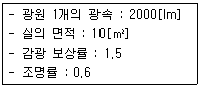
- 3개
- 5개
- 8개
- 10개
(정답률: 55%)
63. 최대 수용 전력이 500kW, 수용률이 80%일 때 부하 설비 용량은?
- 400kW
- 625kW
- 800kW
- 1250kW
(정답률: 57%)
64. 이동식 보도에 관한 설명으로 옳지 않은 것은?
- 속도는 60~70m/min 이다.
- 주로 역이나 공항 등에 이용된다.
- 승객을 수평으로 수송하는데 사용된다.
- 수평으로부터 10° 이내의 경사로 되어 있다.
(정답률: 68%)
65. 급수관에 워터해머(water hammer)가 생기는 가장 주된 원인은?
- 배관의 부식
- 배관 지름의 확대
- 수원(水原)의 고갈
- 배관 내 유수(流水)의 급정지
(정답률: 75%)
66. 압력에 따른 도시가스의 분류에서 고압의 기준으로 옳은 것은?
- 0.1MPa 이상
- 1MPa 이상
- 10MPa 이상
- 100MPa 이상
(정답률: 67%)
67. 압축식 냉동기의 주요 구성요소가 아닌 것은?
- 재생기
- 압축기
- 증발기
- 응축기
(정답률: 65%)
68. 옥내소화전설비의 설치 대상 건축물로서 옥내 소화전의 설치개수가 가장 많은 충의 설치 개수가 6개인 경우, 옥내소화전설비 수원의 유효 저수량은 최소 얼마 이상이 되어야 하는가?(2021년 04월 01일 개정된 규정 적용됨)
- 1.0m3
- 2.6m3
- 5.2m3
- 10.4m3
(정답률: 50%)
69. 변풍량 단일덕트방식에서 송풍량 조절의 기준이 되는 것은?
- 실내 청정도
- 실내 기류속도
- 실내 현열부하
- 실내 잠열부하
(정답률: 65%)
70. 증기난방에 관한 설명으로 옳지 않은 것은?
- 온수난방에 비해 예열시간이 짧다.
- 운전 중 증기해머로 인한 소음발생의 우려가 있다.
- 온수난방에 비해 한랭지에서 동결의 우려가 적다.
- 온수난방에 비해 부하변동에 따른 실내 방열량 제어가 용이하다.
(정답률: 77%)
71. 피뢰시스템에 관한 설명으로 옳지 않은 것은?
- 피뢰시스템은 보호성능 정도에 따라 등급을 구분한다.
- 피뢰시스템의 등급은 Ⅰ, Ⅱ, Ⅲ의 3등급으로 구분된다.
- 수뢰부시스템은 보호범위 산정방식 (보호각, 회전구체법, 메시법)에 따라 설치한다.
- 피보호건축물에 적용하는 피뢰시스템의 등급 및 보호에 관한 사항은 한국산업표준의 낙뢰 리스트평가에 의한다.
(정답률: 71%)
72. 다음 공기조화방식 중 전공기 방식에 속하지 않는 것은?
- 단일덕트방식
- 이중덕트방식
- 멀티존 유닛방식
- 팬코일 유닛방식
(정답률: 77%)
73. 다음과 같은 조건에서 바닥면적 300m2, 천장고 2.7m인 실의 난방부하 산정 시 틈새바람에 의한 외기부하는?
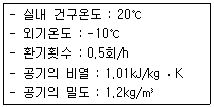
- 3.4kW
- 4.1kW
- 4.7kW
- 5.2kW
(정답률: 49%)
74. 다음 중 사이폰식 트랩에 속하지 않는 것은?
- P트랩
- S트랩
- U트랩
- 드럼트랩
(정답률: 71%)
75. 일사에 관한 설명으로 옳지 않은 것은?
- 일사에 의한 건물의 수열은 방위에 따라 차이가 있다.
- 추녀와 차양은 창면에서의 일사조절 방법으로 사용된다.
- 블라인드, 루버, 롤스크린은 계절이나 시간, 실내의 사용상황에 따라 일사를 조절할 수 있다.
- 일사조절의 목적은 일사에 의한 건물의 수열이나 흡열을 작게 하여 동계의 실내기후의 악화를 방지하는데 있다.
(정답률: 70%)
76. 급수방식 중 펌프직송방식에 관한 설명으로 옳지 않은 것은?
- 전력 차단 시 급수가 불가능하다.
- 고가수조방식에 비해 수질오염 가능성이 크다.
- 건축적으로 건물의 외관 디자인이 용이해지고 구조적 부담이 경감된다.
- 적정한 수압과 수량확보를 위해서는 정교한 제어장치 및 내구성 있는 제품의 선정이 필요하다.
(정답률: 70%)
77. 실내공기 중에 부유하는 직경 10㎛이하의 미세먼지를 의미하는 것은?
- VOC10
- PMV10
- PM10
- SS10
(정답률: 60%)
78. 축전지의 충전 방식 중 필요할 때마다 표준 시간율로 소정의 충전을 하는 방식은?
- 급속충전
- 보통충전
- 부동충전
- 세류충전
(정답률: 70%)
79. 경질 비닐관 공사에 관한 설명으로 옳은 것은?
- 절연성과 내식성이 강하다.
- 자성체이며 금속관보다 시공이 어렵다.
- 온도 변화에 따라 기계적 강도가 변하지 않는다.
- 부식성 가스가 발생하는 곳에는 사용할 수 없다.
(정답률: 66%)
80. 여름철 실내 최고 온도는 외기온도가 가장 높은 시각 이후에 나타나는 것이 일반적이다. 이와 같은 현상은 벽체를 구성하고 있는 재료의 어떤 성능 때문인가?
- 축열성능
- 단열성능
- 일사반사성능
- 일사투과성능
(정답률: 72%)
5과목: 건축법규
81. 다음 설명에 알맞은 용도지구의 세분은?
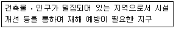
- 일반방재지구
- 시가지방재지구
- 중요시설물보호지구
- 역사문화환경보호지구
(정답률: 79%)
82. 바닥으로부터 높이 1m까지의 안벽의 마감을 내수재료로 하지 않아도 되는 것은?
- 아파트의 욕실
- 숙박시설의 욕실
- 제1종 근린생활시설 중 휴게음식점의 조리장
- 제2종 근린생활시설 중 일반음식점의 조리장
(정답률: 63%)
83. 대지면적이 1000m2인 건축물의 옥상에 조경 면적을 90m2 설치한 경우, 대지에 설치하여야 하는 최소 조경 면적은? (단, 조경설치기준은 대지면적의 10%)
- 10m2
- 40m2
- 50m2
- 100m2
(정답률: 64%)
84. 다음은 주차장 수급 실태 조사의 조사구역에 관한 설명이다. ( )안에 알맞은 것은?
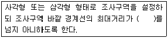
- 100m
- 200m
- 300m
- 400m
(정답률: 69%)
85. 도시ㆍ군계획 수립 대상지역의 일부에 대하여 토지 이용을 합리화하고 그 기능을 증진시키며 미관을 개선하고 양호한 환경을 확보하며, 그 지역을 체계적ㆍ계획적으로 관리하기 위하여 수립하는 도시ㆍ군관리계획은?
- 광역도시계획
- 지구단위계획
- 지구경관계획
- 택지개발계획
(정답률: 68%)
86. 다음 중 허가대상에 속하는 용도변경은?
- 영업시설군에서 근린생활시설군으로의 용도 변경
- 교육 및 복지시설군에서 영업시설군으로의 용도변경
- 근린생활시설군에서 주거업무시설군으로의 용도변경
- 산업 등의 시설군에서 전기통신시설군으로의 용도변경
(정답률: 65%)
87. 일반상업지역에 건축할 수 없는 건축물에 속하지 않는 것은?
- 묘지 관련 시설
- 자원순환 관련 시설
- 운수시설 중 철도시설
- 자동차 관련 시설 중 폐차장
(정답률: 52%)
88. 건축법령상 건축물의 대지에 공개 공지 또는 공개 공간을 확보하여야 하는 대상 건축물에 속하지 않는 것은? (단, 해당 용도로 쓰는 바닥면적의 합계가 5000m2인 건축물의 경우)
- 종교시설
- 의료시설
- 업무시설
- 숙박시설
(정답률: 56%)
89. 시설물의 부지 인근에 부설주차장을 설치하는 경우, 해당 부지의 경계선으로부터 부설주차장의 경계선까지의 거리 기준으로 옳은 것은?
- 직선거리 300m 이내
- 도보거리 800m 이내
- 직선거리 500m 이내
- 도보거리 1000m 이내
(정답률: 71%)
90. 다중이용 건축물에 속하지 않는 것은? (단, 층수가 10층이며, 해당 용도로 쓰는 바닥면적의 합계가 5000m2인 건축물의 경우)
- 업무시설
- 종교시설
- 판매시설
- 숙박시설 중 관광숙박시설
(정답률: 60%)
91. 다음의 옥상광장 등의 설치에 관한 기준 내용 중 ( )안에 알맞은 것은?
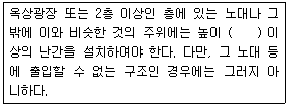
- 1.0m
- 1.2m
- 1.5m
- 1.8m
(정답률: 75%)
92. 도시지역에 지정된 지구단위계획구역 내에서 건축물을 건축하려는 자가 그 대지의 일부를 공공시설 부지로 제공하는 경우 그 건축물에 대하여 완화하여 적용할 수 있는 항목이 아닌 것은?
- 건축선
- 건폐율
- 용적률
- 건축물의 높이
(정답률: 59%)
93. 건축물의 거실(피난층의 거실 제외)에 국토 교통부령으로 정하는 기준에 따라 배연설비를 설치하여야 하는 대상 건축물에 속하지 않는 것은?
- 6층 이상인 건축물로서 종교시설의 용도로 쓰는 건축물
- 6층 이상인 건축물로서 판매시설의 용도로 쓰는 건축물
- 6층 이상인 건축물로서 방송통신시설 중 방송국의 용도로 쓰는 건축물
- 6층 이상인 건축물로서 교육연구시설 중 연구소의 용도로 쓰는 건축물
(정답률: 65%)
94. 태양열을 주된 에너지원으로 이용하는 주택의 건축면적 산정의 기준이 되는 것은?
- 외벽 중 내측 내력벽의 중심선
- 외벽 중 외측 비내력벽의 중심선
- 외벽 중 내측 내력벽의 외측 외곽선
- 외벽 중 외측 비내력벽의 외측 외곽선
(정답률: 74%)
95. 다음은 건축법령상 리모델링에 대비한 특혜 등에 관한 기준 내용이다. ( )안에 알맞은 것은?
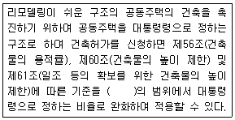
- 100분의 110
- 100분의 120
- 100분의 130
- 100분의 140
(정답률: 78%)
96. 층수가 12층이고 6층 이상의 거실면적의 합계가 12000m2인 교육연구시설에 설치하여야 하는 8인승 승용승강기의 최소 대수는?
- 2대
- 3대
- 4대
- 5대
(정답률: 56%)
97. 건축물의 출입구에 설치하는 회전문은 계단이나 에스컬레이터로부터 최소 얼마 이상의 거리를 두어야 하는가?
- 1m
- 1.5m
- 2m
- 3m
(정답률: 69%)
98. 주요구조부를 내화구조로 해야 하는 대상 건축물 기준으로 옳은 것은?
- 장례시설의 용도로 쓰는 건축물로서 집회실의 바닥면적의 합계가 150m2 이상인 건축물
- 판매시설의 용도로 쓰는 건축물로서 그 용도로 쓰는 바닥면적의 합계가 300m2 이상인 건축물
- 운수시설의 용도로 쓰는 건축물로서 그 용도로 쓰는 바닥면적의 합계가 400m2 이상인 건축물
- 문화 및 집회시설 중 전시장의 용도로 쓰는 건축물로서 그 용도로 쓰는 바닥면적의 합계가 500m2 이상인 건축물
(정답률: 53%)
99. 건축물의 면적, 높이 및 층수 산정의 기본 원칙으로 옳지 않은 것은?
- 대지면적은 대지의 수평투영면적으로 한다.
- 연면적은 하나의 건축물 각 층의 거실면적의 합계로 한다.
- 건축면적은 건축물의 외벽(외벽이 없는 경우에는 외각 부분의 기둥)의 중심선으로 둘러싸인 부분의 수평투영면적으로 한다.
- 바닥면적은 건축물의 각 층 또는 그 일부로서 벽, 기둥, 그 밖에 이와 비슷한 구획의 중심선으로 둘러싸인 부분의 수평투영면적으로 한다.
(정답률: 73%)
100. 부설주차장 설치대상 시설물이 판매시설인 경우 부설주차장 설치기준으로 옳은 것은?
- 시설면적 100m2당 1대
- 시설면적 150m2당 1대
- 시설면적 200m2당 1대
- 시설면적 400m2당 1대
(정답률: 71%)